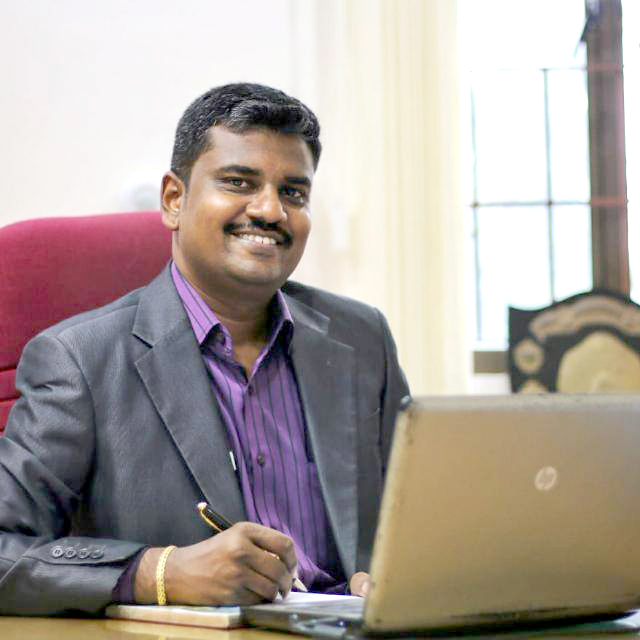

Professor
Department of Electronics and Communication Engineering
Karunya Institute of Technology and Sciences

Dr. D. Nirmal is a Full Professor in the Department of Electronics and Communication Engineering and currently serves as Dean Academic Affairs, Associate Dean – Engineering and Technology at Karunya Institute of Technology and Sciences, India. He has been instrumental in leading academic reforms with a focus on outcome-based education, competency-driven curriculum architecture, and continuous outcome assessment systems, while also contributing to national-level accreditation frameworks and institutional quality enhancement initiatives.His research expertise spans physics-based modeling and TCAD simulation of advanced power semiconductor devices, Gallium Nitride (GaN) High Electron Mobility Transistors (HEMTs), device design and fabrication, reliability and failure analysis, and system-level circuit integration. His work emphasizes predictive modeling for device performance optimization, electro-thermal effects, and long-term reliability assessment in wide-bandgap semiconductor technologies. Dr. Nirmal has attracted research funding amounting to ₹2.1Crores from premier Indian funding agencies including DRDO, ISRO, the Ministry of Electronics and Information Technology, and AICTE. He has also secured innovation-oriented grants for product development through industry and research collaborations with the IIT Tirupati Navavishkar I-Hub Foundation (IITTNiF) and Analog Devices India Pvt. Ltd.
Dr. Nirmal is the founding Chair of the IEEE Electron Devices Society (EDS) Coimbatore Chapter and presently serves as the IEEE EDS Region 10 SRC Chair, contributing to strategic planning and student engagement across the Asia–Pacific region. In addition, he actively participates in several IEEE technical committees and serves as a technical committee member for the EDS Compound Semiconductor Devices and Circuits community.His contributions to semiconductor research and technical education have been widely recognized, including the IEI Young Engineer Award, the IETE Smt. Manorama Rathore Memorial Award (2022), and the Young Scientist Award (2019) from the Academy of Sciences.A prolific researcher and technologist, Dr. Nirmal has authored over 180 peer-reviewed publications and holds three patents. He is a Fellow of IETE and a Senior Member of IEEE, and is frequently invited as a keynote speaker at national and international technical forums, where he presents on emerging device technologies, reliability engineering, and advanced semiconductor system design.
Dr. D. Nirmal is a Full Professor in the Department of Electronics and Communication Engineering and currently serves as Dean Academic Affairs, Associate Dean – Engineering and Technology at Karunya Institute of Technology and Sciences, India. He has been instrumental in leading academic reforms with a focus on outcome-based education, competency-driven curriculum architecture, and continuous outcome assessment systems, while also contributing to national-level accreditation frameworks and institutional quality enhancement initiatives.His research expertise spans physics-based modeling and TCAD simulation of advanced power semiconductor devices, Gallium Nitride (GaN) High Electron Mobility Transistors (HEMTs), device design and fabrication, reliability and failure analysis, and system-level circuit integration. His work emphasizes predictive modeling for device performance optimization, electro-thermal effects, and long-term reliability assessment in wide-bandgap semiconductor technologies. Dr. Nirmal has attracted research funding amounting to ₹2.1Crores from premier Indian funding agencies including DRDO, ISRO, the Ministry of Electronics and Information Technology, and AICTE. He has also secured innovation-oriented grants for product development through industry and research collaborations with the IIT Tirupati Navavishkar I-Hub Foundation (IITTNiF) and Analog Devices India Pvt. Ltd. Dr. Nirmal is the founding Chair of the IEEE Electron Devices Society (EDS) Coimbatore Chapter and presently serves as the IEEE EDS Region 10 SRC Chair, contributing to strategic planning and student engagement across the Asia–Pacific region. In addition, he actively participates in several IEEE technical committees and serves as a technical committee member for the EDS Compound Semiconductor Devices and Circuits community.His contributions to semiconductor research and technical education have been widely recognized, including the IEI Young Engineer Award, the IETE Smt. Manorama Rathore Memorial Award (2022), and the Young Scientist Award (2019) from the Academy of Sciences.A prolific researcher and technologist, Dr. Nirmal has authored over 180 peer-reviewed publications and holds three patents. He is a Fellow of IETE and a Senior Member of IEEE, and is frequently invited as a keynote speaker at national and international technical forums, where he presents on emerging device technologies, reliability engineering, and advanced semiconductor system design.
Department of Electronics and Communication Engineering
Karunya Institute of Technology and Sciences
Department of Electronics and Communication Engineering
Karunya Institute of Technology and Sciences
Department of Electronics and Communication Engineering
Karunya University
Electronics and communication Engineering Department
Karunya University
Mens Hostel
Karunya Institute of Technology and Sciences
Mens Hostel
Karunya University
Faculty of Information and Communication Engineering, Highly Commended
(Specialisation in Nano Device Modelling) Anna University Chennai
Post Graduate Diploma in Higher Education
Indira Gandhi National Open University
Master of Engineering
Specialization in VLSI Design)
Karunya University , India.
Electrical and Electronics Engineering
Anna University
My research interest focus on Nanoelectronic device modelling ,simulation, fabrication, characterization, Optoelectronics devices, nanowires, novel transistor devices, electrical transport in low-dimensional systems and their circuit applications for future low power and high power applications.


The following is a list of selected publications. For a complete list please download my CV.
The contagious energy share in the classroom brings new ideas and clarity of thought to my research. But the aspect of teaching I have come to cherish the most is the feeling of restoring hope and giving direction to struggling students.
My biggest challenge is to inspire students to focus on studying our course material by explaining first-hand its practical benefits with clear, real-life examples and case studies. Many students feel lost, swept up in searching for their place in society and purpose in life, and this at-times overwhelming philosophical venture can easily dampen their enthusiasm for the learning experience. To keep them grounded and on-track for success, I balance lecture with discussion and group work.
Our society can improve the lives of future generations by better preparing them for holistic success. This effort demands refining our pedagogy, and ultimately our education system. I therefore hope to continue teaching, as well as advancing personal research projects, to contribute to social progress and the betterment of our world.
The following is a list of selected publications. For a complete list please download my CV.
Life Member of ISTE(Indian Society for Technical Education)
Fellow of IETE (The Institution of Electronic and Telecommunication Engineers) M-215257
Senior Member of IEEE (Institute of Electrical and Electronics Engineering)
Life Member of ISTE(Indian Society for Technical Education)LM-56881
Member of VSI (VLSI Society Of India)
Life Member of SSI(Semiconductor Society of India)
Member of Institute of Engineers (India)M-1544705.
Life Member of IETE (The Institution of Electronic and Telecommunication Engineers)
Life Member of IAENG(International Association for engineers)
Member of IACSIT(International Association Of Computer Science And Information Technology)
Member of ACCENT (Association of Computer Communication Education for National Triumph Social and Welfare Society)
Dr. D. Nirmal has obtained his Bachelor of Engineering in Electrical and Electronics Engineering from Anna University Chennai and M.Tech in VLSI Design from Karunya Institute of Technology and Sciences. He has received Ph.D in Information and Communication Engineering from Anna University. He is presently working as an Professor, Associate Dean-Engineering & Technology, Karunya Institute of Technology and Sciences, Coimbatore. His research interests includes Nanoelectronics, 1D/2D Materials, Carbon nanotubes, GaN Technology, VLSI Technology, NanosacleDevice Modelling and Simulation – HEMT, FINFET, LED, Energy Storage Devices,GSI, Sensors. He is a NAAC Assessor for the Government of India, actively involved in the quality assurance and accreditation of higher education institutions across the country. In addition, he holds the position of R10 IEEE EDS SRC Chair within the IEEE Electron Devices Society in the Asia-Pacific region. He has completed a project funded by DRDO and Ministry of Electronics and Information Technology, Government of India and currently handling a funded project from ISRO,Department of Space and AICTE(All India Council of technical Education).
He has published more than 180 research papers.Currently he is a Chair of IEEE EDS Coimbatore chapter Madras Section and Member of IEEE Electron Device society VLSI Technology and Circuits committee. He is a recipient of several awards for his credits to name few Young Scientist Award 2019 from the Academy of SciencesChennai, Institution of Engineers India Young Engineers Award- Electronics and Telecommunication Engineering- 2017,Shir.P.K.Das Memorial Best Faculty Awardand many more. He an Editor for several International Journals and reviewer for many IEEE Transactions for his research credits. He also a Senior IEEE member, Life member of ISTE , Member of IETE and also Member of IEI. He has delivered many Keynote address and lectures in National and International conferences/programs.
Dr.D.Nirmal,M.E, Ph.D.,SMIEEE.,LMIETE.,MISTE.,
Professor, Associate Dean-School of Engineering & Technology,
Karunya Institute of Technology and Sciences.
Office : +91- 422 – 2614388
Mobile: +919789498810
Office : +91 – 422 - 2615615
dnirmalphd@gmail.com
nirmal@karunya.edu
Office:
{kind=link}
{kind=link}
{kind=link}
{kind=link}
{kind=link}